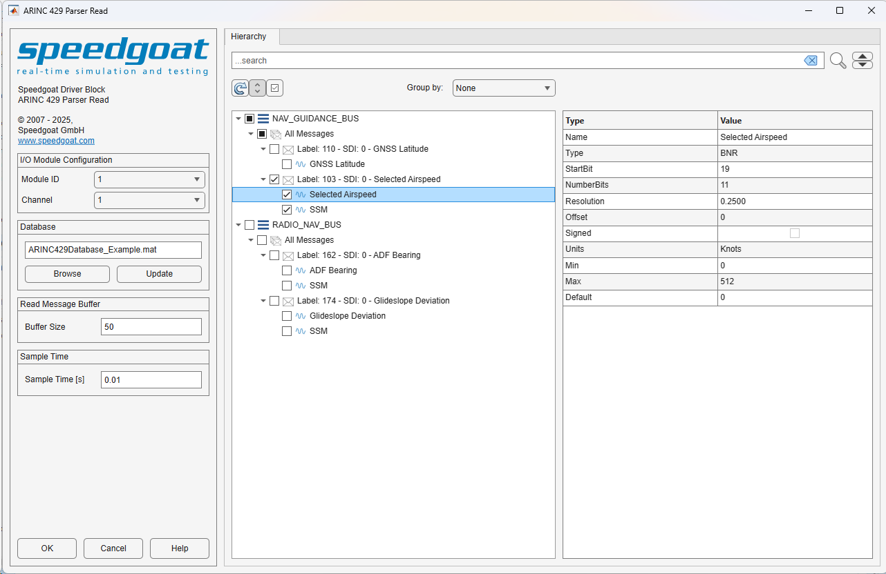

ARINC 429 Parser Read — Reads ARINC 429 words from one channel
The ARINC 429 Parser Read block consists of a masked subsystem, which adds an additional functionality layer to the existing IO682 Receive block. The subsystem is dynamically populated with a set of preconfigured ARINC 429 Unpack blocks, the corresponding IO682 Receive blocks, preconfigured output ports, and the interconnecting lines. The ARINC 429 Parser Read block mask allows users to select which configuration file messages should be received.
The ARINC 429 Parser Read block cannot be edited when linked to a custom library because the block contains instance-specific data that cannot be shared across links. The block remains editable within the library itself; changes made there are reflected in all linked instances. Additionally, the block cannot be used within subsystem models as these are not supported.
Outputs a single bus containing all enabled messages. Each message contains the signals defined in the database, the timestamp of the message received, a status flag indicating if the message was received, and the raw ARINC 429 word.
Selects the IO682 I/O module with which this driver block communicates. The list is populated according to the IO682 Setup blocks in the model.
Select the IO682 channel with which this driver block communicates.
Select a configuration file from your folders by clicking the browse button.
Refer to the Usage Notes for more information about the configuration file.
Use this button if the configuration file changes.
Select the buffer size of the IO682 receive block which this driver block communicates.
All messages defined in the selected configuration file are displayed in the Hierarchy tab. Detailed information about the various signals is displayed when a specific message is selected.

The Hierarchy tree has a Search field available, which highlights nodes found in this tree. You can cycle through highlighted nodes using the up and down arrow buttons next to the Search button. Clear the Search field to clear the node highlighting.
This button refreshes the Hierarchy tree and the Details Table.
This button expands or collapses all nodes in the Hierarchy tree.
Allows users to enable or disable all available messages in one click.
Allows users to sort the messages either by None, Equipment, or Channel.
The Details Table shows all the information available in the configuration file for the selected node. Depending on the hierarchy level, different types of information are displayed. No actions are available for this table.